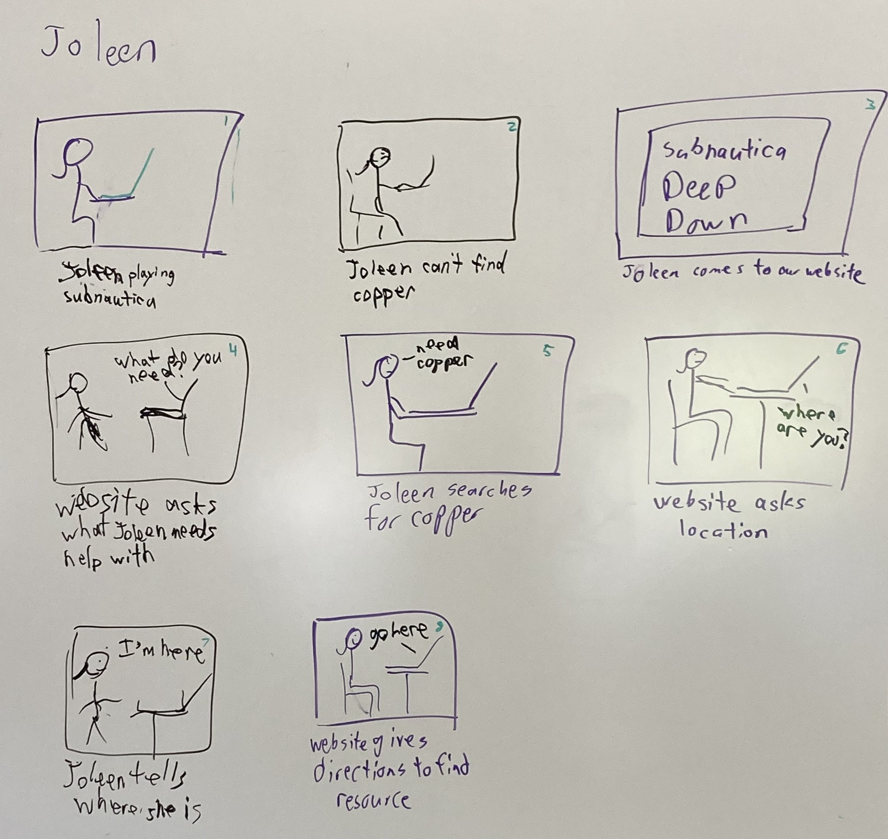
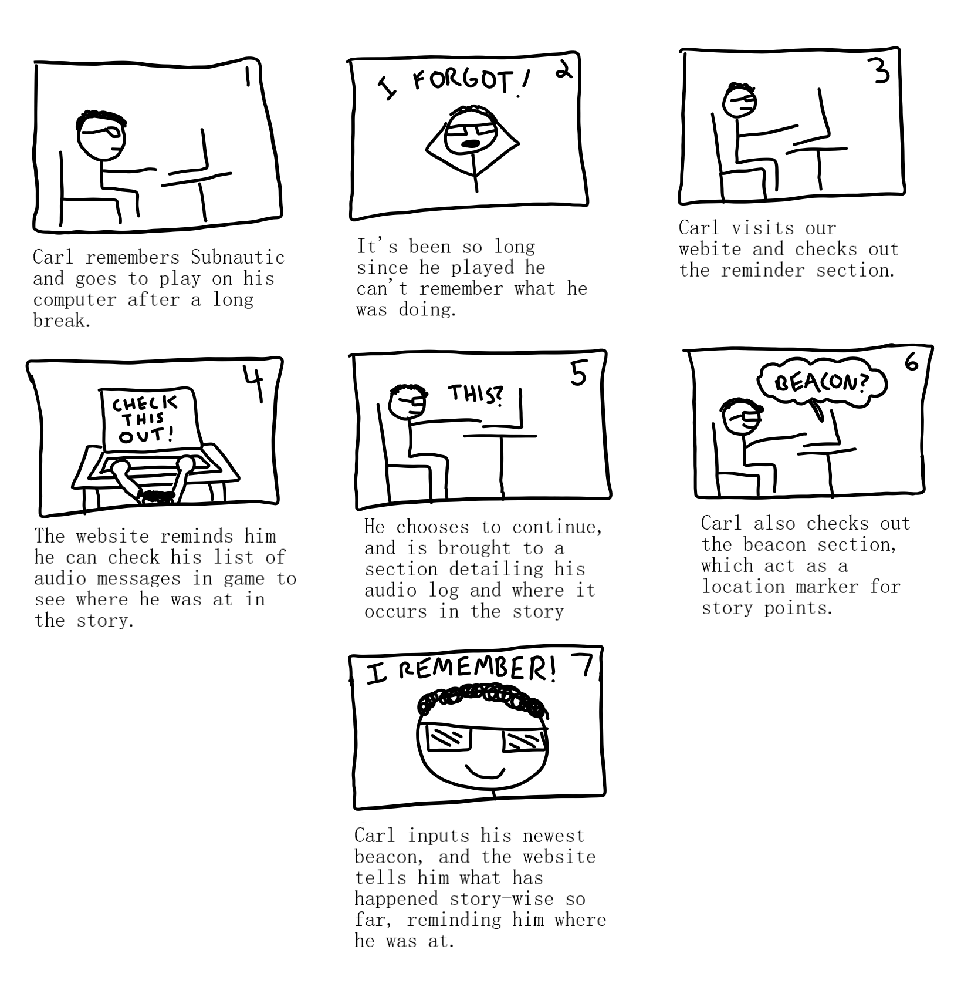
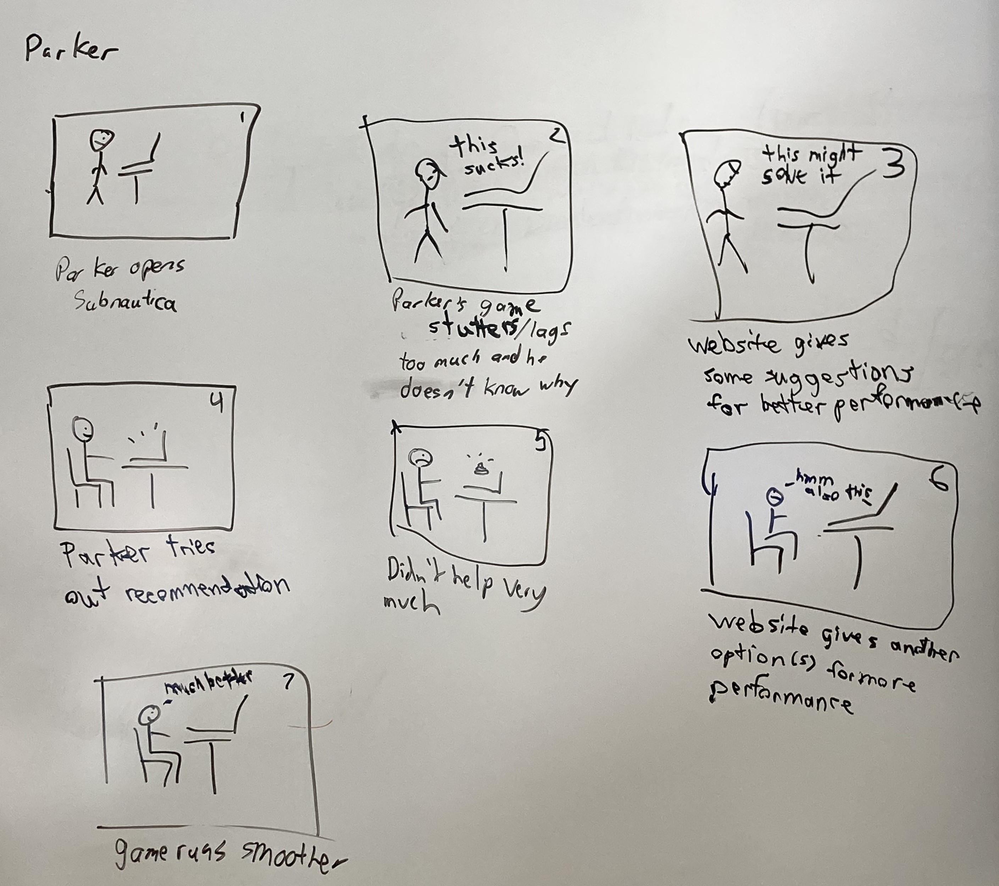
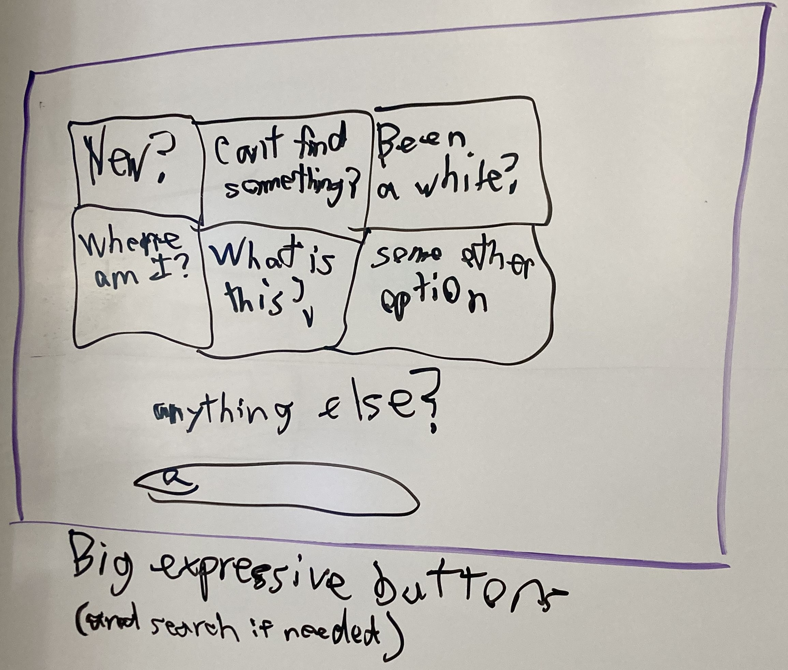
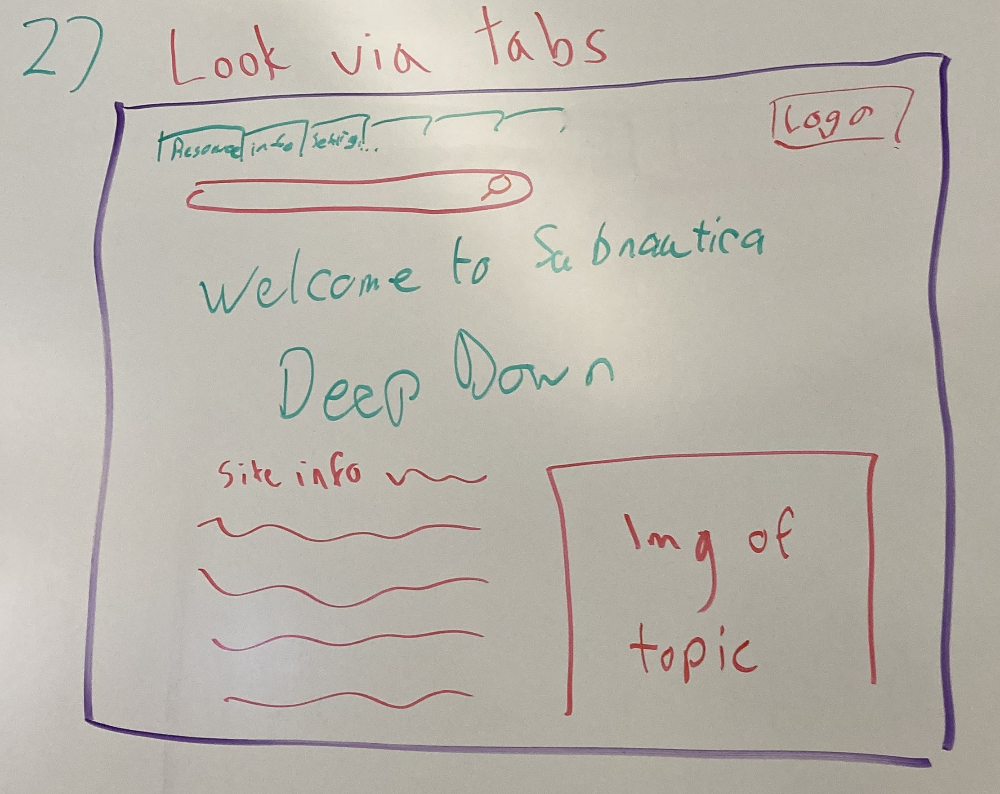
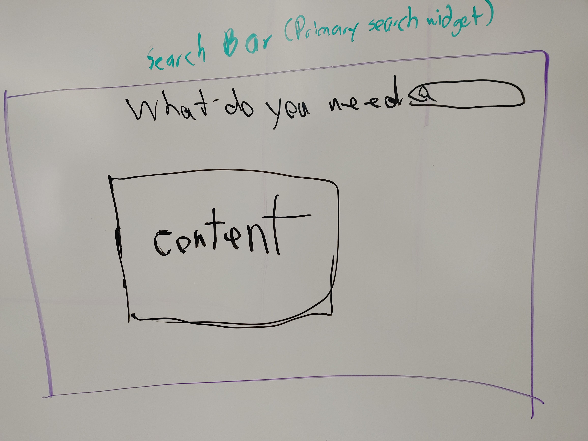
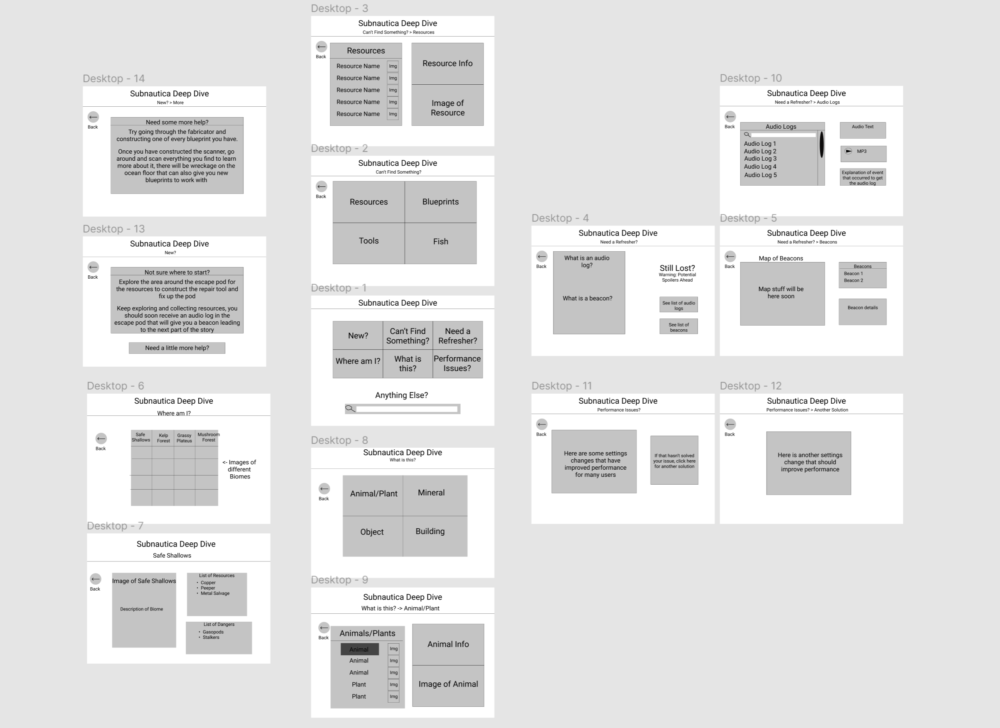

CSC 492 Semester-Long Project
Group Members
Jackie Birkenstock - jbirkenstock@uri.edu
Nathan Harding - nathan_harding@uri.edu
Ben St. Martin - bst-martin@uri.edu
Milestone 1
1. Problem - Starting a new game can be extremely stressful for beginners, especially when it is loaded with detail-specific mechanics and a steep learning curve. If a game fails to hook new users at the start with a poor tutorial, or fails to continually provide the player with help, it is very likely that the users will lose interest/become frustrated.
2. Target Users - A target audience of this application is people who are new to a specific game or playing games in general, and who would want a web application that helps explain mechanics. Another group of target users is novice players who know a game already, but may have forgotten how certain elements work (Perhaps they played it for a short while and just now have time to play again a few months down the line from when they started). The ages of these users should be able to range from teens to adults.
3. Solution - Develop a web application that provides information about game mechanics, as well as interactive interfaces that can simulate certain elements of the game and provide explanation (ie. a crafting recipe system). This website can also explain characteristics of the game, so for those who are easily startled, they have a small bit of knowledge so their hearts continue functioning well after a terrifying experience has happened. The application can cover one or several games, depending on time constraints. Possible games to go over include Subnatica, Terraria, Warframe, and the Binding of Isaac.
Milestone 2
Subnautica Deep Dive
Problem
Subnautica is a vast, open-world survival game unlike many others, since most of the world is underwater. Although exploration and discovery are a large part of the game, the lack of direction can be quite intimidating, especially for new players. Subnautica Deep Dive aims to assist players with this issue, giving them direction and information about the game without completely spoiling the plot.
Personas


Problem Senarios and Tasks
Problem Scenario - Joleen Moccasin
Joleen had been playing Subnautica for a couple hours now and she was enjoying finding new fish and such, aside from some early frustrations with how small her oxygen tank was until she figured out how to make a bigger one. She noticed that there was an even bigger one to make and so she set off to find the crafting components. Unfortunately, she spent the next hour and a half unable to find the piece of silver she needed, and when she did finally find it she accidentally died to one of the exploding fish. After respawning in the escape pod, she noticed that she had lost the silver she had worked for so long and hard to get and she had no idea how to get back to where she died to pick it up. This was enough to cause Joleen to quit her session of playing, feeling frustrated and angry.
Tasks - Joleen Moccasin
- Died and lost resources
- Can’t find a specific resource or blueprint after looking for a long time
- Coming back to game later and forgetting what the last task was
Problem Scenario - Carl Hansen
Carl has just finished a large project for work and is happy that he finally has a chance to get back to Subnautica. Unfortunately, when he starts up the game, he struggles to remember what he was doing during his last play session. He feels that after such a long period of time he may need to simply start a new game file to refamiliarize himself, but he’d rather not lose the progress he spent so much of his precious free time on. He decides that he’d rather not start a new game and loads up his old save file. He’s a bit confused as to his goal and spends most of his time just building up his base and after playing for a bit, he wishes that he could have remembered what was happening last time so he can make some more progress with the story.
Tasks - Carl Hansen
- Needs some sort of walkthrough/ story synopsis
- Needs a crafting section that goes over what materials are needed and what they make
- Needs information on materials, locations, enemies, etc. for the user to gauge what is needed to collect them/face them, and to see how much of a challenge these things present
Problem Scenario - Parker Sanchez
Parker gets home from school on friday looking forward to trying out his new game. He boots it up and starts the game, picking the first option in each selection assuming that is what he should do. He gets through the opening cutscene and puts of the fire, and after finishing the quick tutorials the game gives him he is not sure where to go next. He leaves the escape pod and swims around for a bit learning about things like needing to resurface for air and that there are rocks that he can break to get shiny resources. However he is at a loss for what to do next. He also wonders how to get a bigger oxygen tank so he can explore underwater for longer as he is a little annoyed at having to resurface constantly. After a bit of searching he manages to find the resources necessary to construct the repair tool and fixes the escape pod and after that doesn’t have much clue as to what he should do next. His experience has also been somewhat marred by the poor performance of his older laptop.
Tasks - Parker Sanchez
- Needs an overview of settings so new players can understand how to set up the game for their system
- Needs an example playthrough so players have a rough idea of the order of events
- Needs a section that details what items do and how to upgrade them
Use Cases
Uses Case Scenario - Joleen Moccasin
- Joleen asks for help finding resources
- Joleen asks for help finding resources.
- Website asks what she is trying to find.
- Joleen enters a common item (i.e. resource chunks, wreckage locations, blueprints, etc.)
- Website asks what biome Joleen is in.
- Joleen enters her ecosystem (Kelp Forest, Grassy Plateaus, etc.)
- Website will give general directions to location for resources.
Uses Case Scenario - Carl Hansen
- Carl searches for help online and finds our site
- He reads through a section that gives an overview of the game and a synopsis of the story points (broken up into several sections so people can stop before being spoiled)
- After gauging where his is level-wise in the game, the walkthrough mentions certain items he needs, which are linked to another section for crafting
- Carl sees what he resources he needs to craft, how to craft the item, and understands how to use this item
- After seeing the items he needs, he references the walkthrough again which links to a location section. This covers where the location is, how to survive in it, what the player will be facing, etc.
- After being refreshed on where he was, what he was doing, and what his next best course of action is, he can start play again and pick up where he left off
Uses Case Scenario - Parker Sanchez
- Parker googles what to do next in Subnautica and finds our site
- He opens the walkthrough section that details the order of events a player could take
- At the start of the walkthrough section, before the game starts, Parker notices a link to setting up the game before playing through the settings
- Parker updates his settings based on the recommendations
- In the walkthrough section, the items required to make it to the next area are listed, with links to item information and crafting recipes
- After reviewing the walkthrough, Parker has a better idea of what direction to take and what items he needs to craft. He has also better optimized his game for his computer.
Requirements:
Functional
- Links that lead to resources
- Have a walkthrough section with info on a general progression path
- Have a tips section for avoiding dying in an unknown place
- Section for how to craft different things
- A world map that shows where to find things
- Story refresher section
Data
- The map of the subnautica world
- Crafting recipes of items in subnautica
- Hostile creature behavior
- Biome info (what resources/fish spawn in each biome)
- Pictures of the different biomes for visual reference
- Pictures of tools/resources/fish
Environment
- Needs to run in chrome/firefox
Users
- Have a beginner friendly approach for lower tech users.
User Experience Goals
- Users are guided to information through questions shown on the screen.
- Text is large and easy to read
Milestone 3
Scenario Storyboards
Joleen
Carl
Parker
Interface Design Options
Large Expressive Buttons
This design focuses on using large expressive buttons to lead the user to the information they are looking for. Subsequent pages will have additional button choices until arriving at a “leaf” page that contains the information they are most likely interested in. We expect each branch to have around 3-4 selections before arriving at a leaf. There is also a search bar at the bottom of the home page for any user that may simply want to search the answer to their problem.
Tabs and Information
This design focuses on using tabs to navigate to information. Information that is selected through a series of cascading dropdown menus and then loading the content selected onto the page. The image of topic will be an image that visually represents the selected topic, e.g. a picture of the biome, a picture of the resource, etc. A search bar is placed for when a user wants to search for an option as well.
Search Widget
This design was done with the focus being on a search widget. The user would search for what the are looking for and the website would then load the content associated with their result underneath the search bar.
Interface Design Choice
Large Expressive Buttons

We decided to use the expressive buttons design because we felt that it would provide the best experience for new players who don’t have experience with navigating wordy websites and it would serve as a good way to avoid having our website follow the typical wikipedia format.
Screen Sketches
Joleen's Task
Task 1

Task 2

Task 3

Carl's Task
Task 1

Task 2

Task 3

Task 4

Parker's Task
Task 1

Task 2

Task 3

Milestone 4
Tasks
(1.) The first core task our prototype supports is being able to use the website to find a resource such as copper.
(2.) The second core task our prototype supports is giving the user resources to refresh themselves as to what they were doing during their last play session.
(3.) The third core task our prototype supports is helping players who have just started Subnautica and are unsure of where they should start
Prototype
Link to our Prototype
Instructions
Navigate to the Figma page through the link above and click the Start button in the top right corner to begin the prototype.
Prototype Tool Choice: Figma

- Performance felt better than the other recommended tools
- Very easy to link components to make the prototype function
- Although it struggled to give user feedback on buttons, none of the given options apparently had that feature
Design Choices
Representative Screenshots
Formative Evaluation
List of Problems
- Lack of scroll bars in prototype (P1, P2) (low)
- Lack of search boxes in prototype (P1, P2) (low)
- Poor wording (P1, P2, P3) (high)
- Site description missing (P2) (med)
- Home page search bar placement ineffective (P2) (med)
- Home button on all pages missing (P1) (med)
- Aesthetic details missing (P1,P2) (med)
- Poor feedback for buttons (P2, P3) (med)
- Ambiguous/confusing questions (P2, P3) (high)
- Lack of in depth New Player Section (P3) (high)
- Lack of images/icons (P1,P2) (high)
Using the above problems, we created three groups to categorized and address them.
Navigation Issues
-Search and Scroll Bars were unintuitive or lacking (P1, P2) (low)-> Could address by making sure links appear in sub heading, including the Home button
-> Note: The “Back” button got positive feedback during reviews (P1,P2) Would be good to include in future iterations
Aesthetic Issues
-Site is visually lacking (P1, P2) (low)-> One reviewer recommended adding a color gradient as you scroll down on site or in sub-box
-Images are largely missing from the site (P1,P2) (high)
Logical Issues
-Button questions are ambiguous/confusing (P2, P3) (high)-> Also make questions clearer (ie “Are you new to the game?” rather than “New?”)
-Feedback for Buttons Lacking (P2, P3) (med)
-Wording was poor (P1, P2, P3) (high)
-Site description missing (P2) (med)
-Lack of in depth New Player Section (P3) (high)
-> Create more subsections as needed for specific topics
Contributions
Jackie: Figma prototype (desktops 6, 7, 13, 14), P1 evaluation, tasks, list of problems/priorities, aesthetic issues
Nathan: Figma prototype (desktops 4, 5, 10), P2 evaluation, reviewer summary, naviagation issues, milestone 4 website update
Ben: Figma prototype (desktops 1, 2, 3, 4, 11, 12), P3 evaluation, prototype choice explaination, design choices, representative screenshots, logical issues